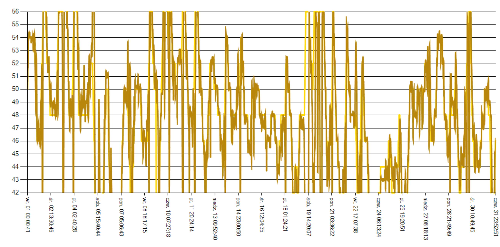

Geneza i problem in\.zynierski
Przeprowadzka do domu z piecem zasypowym (węglowym) postawiła konkretny
problem: piec nie ma \.zadnej automatyki — utrzymanie temperatury wymaga schodzenia
do kotłowni i ręcznego regulowania nadmuchu. Istniejące termostaty
rozwiązują jedynie część problemu — sterują w trybie ON/OFF,
co prowadzi do du\.zych oscylacji temperatury i nieefektywnego spalania. Projekt
reaktywował wcześniej zaprojektowaną płytkę PCB i przez
trzy sezony grzewcze ewoluował w odpowiedzi na realne obserwacje eksploatacyjne.
| Sezon 3+ |
|---|
| Minimalizacja kosztu energii, obsługa bojlera. Delta control, OneDrive, telemetria. |
Architektura systemu
Kł{
title=01 Fazowe sterowanie mocą AC (Phase-Angle Control) — zamiast falownika VFD]
Dlaczego niezbędny jest falownik — typ silnika:
Dmuchawa pieca napędzana jest indukcyjnym jednofazowym
asynchronicznym (single-phase induction motor). Jego prędkość
obrotowa jest ściśle związana z częstotliwością napięcia
zasilającego:
n_s = 60 fp = 60 502 = 1500\;obr/min
(silnik 2-parowy, siec 50 Hz)
Standardowa metoda regulacji: falownik VFD (Variable Frequency Drive)
zmienia częstotliwość napięcia, przestrajając prędkość
synchroniczną. Koszt falownika do zastosowań domowych: 200–500 zł.
Zastosowane rozwiązanie — phase-angle control:
Sterowanie fazowe opiera się na opóźnieniu wyzwolenia triaka
względem momentu przejścia napięcia sieciowego przez zero. Im większe
opóźnienie, tym mniejsza wartość skuteczna (RMS) napięcia na
uzwojeniu silnika. Dla wentylatora odśrodkowego moment napędowy
rośnie proporcjonalnie do kwadratu prędkości (<em class='math'>M propto n^2):
przy obni\.zonym napięciu silnik naturalnie stabilizuje się przy ni\.zszej
prędkości — bez falownika. Technika stosowana komercyjnie w regulatorach
przemysłowych.
Faza_sub: ' Przerwanie INT0 -- kazde przejscie napiecia przez zero (50 Hz, co 10 ms)
Reset Triak1 : Reset Triak2 : Reset Triak3 ' Wylacz wszystkie kanaly
Timer0 = 225 ' Reset licznika opoznienia (tick ~32 us)
Odmierz_1ms: ' ISR Timer0 -- odmierza opoznienie fazowe
Incr Int_count
If Int_count > Tr(1) Then Set Triak1 ' Kanal 1 -- wyzwol po Tr(1) taktach
If Int_count > Tr(2) Then Set Triak2 ' Kanal 2 -- dmuchawa
If Int_count > Tr(3) Then Set Triak3 ' Kanal 3 -- bojler / grzalka
' Tr(n) = 0 pelna moc | Tr(n) = 20 minimumtitle=02 Sterowanie deltą temperatury — regulacja antycypacyjna zamiast progów]
Klasyczny termostat: włącz gdy <em class='math'>T < T_min, wyłącz gdy <em class='math'>T > T_max
— efekt: oscylacje i du\.zy czas odpowiedzi na zmiany zewnętrzne.
Zastosowane rozwiązanie oblicza co 15 sekund ą pochodną
temperatury (tendencję) i podejmuje decyzje na podstawie
zmian, zanim temperatura przekroczy próg. Odpowiednik członu D w regulatorze PID,
zaimplementowany bez bibliotek na 8-bitowym mikrokontrolerze.
Tendencja_sub: ' Wywolywana co 15 s przy kazdym odczycie czujnikow
Temp_buf_tend = Temp_wart(2) - Temp_buf_tend ' Pochodna dyskretna: delta T / delta t
Select Case Temp_buf_tend:
Case Is < 0 : Delta_buf = 3 ' T SPADA --> wzmocnij nadmuch dmuchawy
Case 0 : Delta_buf = 32 ' T STABILNA --> utrzymaj aktualna moc
Case Is > 0 : Delta_buf = 2 ' T ROSNIE --> ogranicz nadmuch
Temp_abs = Abs(temp_buf_tend) ' Wielkosc zmiany -- wyswietlana jako "tendencja"
Temp_buf_tend = Temp_wart(2) ' Zapamietaj biezaca wartosc do kolejnego cykluDwupoziomość regulacji: PAC steruje mocą w skali półokresu sieci
(10 ms), Delta\_toggle zarządza cyklem pracy dmuchawy w skali sekund.
title=03 Programowe okno EMC — wyłączenie triaków podczas pomiaru 1-Wire]
Triaki przełączające obcią\.zenia 230 V generują silne zakłócenia
elektromagnetyczne (EMI). Protokół 1-Wire czujników DS18B20 wymaga precyzyjnego
timingu (impulsy 1–480\,s). Standardowe rozwiązanie: filtry RC, rdzenie
ferrytowe, ekranowanie okablowania.
Rozwiązanie programowe: przed ka\.zdym pomiarem firmware wyłącza
wszystkie triaki i zatrzymuje oba przerwania — ``okno ciszy elektromagnetycznej''.
Koszt: zero dodatkowego hardware.
Pomiar_temp_sub:
Reset Triak1 : Reset Triak2 : Reset Triak3 ' Cisza EM -- brak przelaczen
Disable Int0 ' Stop: detekcja zera (brak wyzwolen triak)
Disable Timer0 ' Stop: odmierzanie fazy
Gosub Zmierz_temp_sub ' Bezpieczny pomiar DS18B20 przez 1-Wire
Gosub Odczytaj_temp
Enable Int0 : Enable Timer0 ' Wznow pelne sterowanietitle=04 OneDrive jako bezpieczna brama IoT — przed erą IoT]
Rok 2017. Zdalny dostęp do sterownika bez: otwierania portów routera, dynamicznego
DNS, własnych certyfikatów SSL, własnego backendu autoryzacji.
Rozwiązanie: aplikacja PC w kotłowni zapisuje pliki statusu do katalogu
OneDrive, który synchronizuje się automatycznie z chmurą. Dostęp
z dowolnego miejsca przez infrastrukturę Microsoft — autoryzacja, szyfrowanie
i bezpieczeństwo dostarczane przez dostawcę, koszt implementacji: zero.
Wzorzec dziś znany jako file-based IoT gateway — tu wdro\.zony zanim
platformy IoT (MQTT, Home Assistant) stały się powszechne.
title=05 Podświetlenie LCD jako wielostanowy wskaźnik statusu]
Zamiast dodatkowych diod LED (koszt, okablowanie, otwory w obudowie),
podświetlenie LCD koduje stan systemu częstotliwością migania
widoczną z drugiego końca kotłowni:
| Stan | Miganie | Znaczenie |
|---|---|---|
| T rośnie | wolne (750 ms) | System dogrzewa, nadmuch pracuje — sytuacja normalna |
| T spada | szybkie (250 ms) | Piec gaśnie lub dom się wychaładza — wymaga uwagi |
| Stabilna | stałe świecenie | Utrzymana temperatura zadana |
Odmierz_1ms: ' ISR Timer0 -- co 1 ms, steruje podswietleniem wg aktualnej delty
Select Case Delta:
Case 2: ' Temperatura rosnie
If 1ms > 750 Then 1ms = 0 : Toggle Podswietlenie ' Wolne miganie
Case 3: ' Temperatura spada
If 1ms > 250 Then 1ms = 0 : Toggle Podswietlenie ' Szybkie miganie
' Case 0 (stabilna): Reset Podswietlenie -- stale swiecenietitle=06 USB Bootloader — aktualizacja firmware bez demonta\.zu]
Sterownik zainstalowany w kotłowni, podłączony do pieca. Wymiana
mikrokontrolera w celu przeprogramowania = demonta\.z, ryzyko uszkodzenia lutowań,
przerwa w pracy systemu.
Rozwiązanie: własny bootloader załadowany do wektora resetu
ATmega328P, aktywowany sekwencją sygnałów na linii UART/USB. Aktualizacja
firmware: wyślij plik .hex z komputera przez USB — bez dotykania sprzętu.
Identyczna metoda stosowana w urządzeniach produkcyjnych (Arduino oparty na tym
samym mechanizmie); tu zaimplementowana samodzielnie.
title=07 Architektura firmware: modularność, buforowany rendering, kooperacyjny scheduler]
Oprogramowanie v2.0 realizuje wzorzec architektoniczny bli\.zszy programowaniu
strukturalnemu i deklaratywnemu ni\.z proceduralnym — w środowisku, które
Trzy ortogonalne warstwy tworzą spójny system:
A) Modularność — plik główny jako manifest zale\.zności
Plik główny zawiera wyłącznie deklaracje \$include i 7 wywołań
podsystemów w pętli głównej — zero logiki aplikacyjnej.
Ka\.zdy moduł (klawiatura, RTC, pomiar temperatury, sterowanie wyjściami,
komunikacja UART, wyświetlacz, menu) jest niezale\.zną jednostką
kompilacji z precyzyjnie zdefiniowanym interfejsem.
Wywołania podprogramowe zamiast procedur to świadoma decyzja: procedury
generują prolog/epilog i ramkę stosu software; CALL/RET
na hardware stack MCU to kilka cykli i zero narzutu pamięciowego —
krytyczne przy 2 kB RAM.
B) Buforowany rendering — pipeline jak w grafice komputerowej
Wyświetlacz 2×16 obsługiwany przez trzyetapowy pipeline:
scena zdefiniowana w tablicach → compositor z clippingiem →
bufor → LCD driver — zero pisania wprost do sprzętu.
Ka\.zdy stan interfejsu ma zestaw warstw z pozycją
(Axis\_x/y\_tab), widocznością (On\_tab:
0/1/254=miga/255=zawsze miga) i treścią (Layer\_tab).
Layer\_sub wkleja warstwę w bufor tła z obsługą przycinania
po obu stronach (string blitter). 25 typów dynamicznych treści
(czas, daty, temperatury, delta, wersja firmware, nazwy kanałów) — zmiana
layoutu ekranu to zmiana wartości w tablicach, bez dotykania kodu renderującego.
C) Tablice jako program, scheduler jako kernel
Tablice nawigacji definiują całe zachowanie interfejsu.
Naciśnięcie przycisku = jedno wywołanie LOOKUP —
6 zmiennych stanu pobieranych równocześnie z PROGMEM.
Zero instrukcji warunkowych w logice nawigacji; dodanie pozycji menu
= nowy wiersz w tablicach.
Key_klick:
Select Case Klawiatura:
Case Gora: ' 6 zmiennych stanu naraz -- zamiast drzewa if/else
Menu = Lookup(buf_menu , Menu_gora) : Podmenu = Lookup(buf_menu , Podmenu_gora)
Wartosc = Lookup(buf_menu , Wartosc_gora) : Kursor = Lookup(buf_menu , Kursor_gora)
Wartosc_min = Lookup(buf_menu , Min_gora) : Wartosc_max = Lookup(buf_menu , Max_gora)
Case Dol: Menu = Lookup(buf_menu , Menu_dol)
Case Lewo: Decr Wartosc Case Prawo: Incr WartoscTimer0 ISR multipleksuje równolegle zadania krytyczne czasowo: sterowanie
triakami PAC, miganie podświetlenia LCD, tick 1 ms. Pętla główna
kooperatywnie wywołuje podsystemy w stałej kolejności —
cooperative bare-metal scheduler bez \.zadnego frameworka RTOS.
Tablice mo\.zna przenieść do zewnętrznego EEPROM lub karty pamięci;
rekonfiguracja urządzenia bez wgrywania nowego firmware. Ten sam wzorzec
w profesjonalnych systemach: AUTOSAR (ARXML), silniki gier (ROM kartrid\.zu),
frameworki UI (XML layout). Tu — na 2 kB RAM, 5,5 roku w produkcji.
title=08 Narzędzie diagnostyczne: własny terminal portu szeregowego zamiast generycznych]
Problem: dostępne terminale COM nie odpowiadały potrzebom debugowania
protokołu UART sterownika pieca — brakowało jednoczesnego wyboru formatu
danych, bezpośredniego wyzwalania bootloadera i obsługi ramek ze znacznikami
STX/ETX.
Rozwiązanie: własna aplikacja Terminal Portu COM (VB.NET) —
trzy klasy logiki i jeden formularz, ka\.zda odpowiedzialna za osobny obszar:
Multi-format BIN\,/ HEX\,/ STRING\,/ ASCII osobno dla nadawania
i odbioru — pozwala jednocześnie wysyłać polecenia tekstowe
i obserwować odpowiedź w postaci szesnastkowej bez przełączania trybu.
Przycisk Bootloader: otwiera port, wysyła zdefiniowane polecenie
(np. boot), natychmiast zamyka port —
jedno kliknięcie zamiast ręcznej sekwencji open\,/ send\,/ close
przy wgrywaniu firmware przez AVR bootloader.
Detekcja ramki STX/ETX w klasie Receiver —
terminal rozumie granicę komunikatu protokołu, nie wyświetla surowego
strumienia bajtów.
250 000 baud na liście — prędkość AVR bootloadera
niedostępna w większości terminalów ogólnego przeznaczenia.
Projekt ewoluował przez trzy generacje:
VB.NET (ukończony) → C\# WinForms (porzucony) →
C\# z interfejsem ISerialPort (architektura) —
ślad nauki wzorca Dependency Inversion w trakcie pracy z produkcyjnym kodem.
Wyniki i walidacja
5,5 roku nieprzerwanej pracy w realnym domu — najlepsza mo\.zliwa
walidacja systemu embedded. Sterownik działał od XI 2016 do VII 2022.
Wynik: ok. 11 milionów rekordów pomiarowych w 61 miesięcznych
bazach MS Access (łącznie 1,65 GB).
Precyzja sterowania obliczona z całego zbioru pomiarów:
<em class='math'>pm1\,C dla obiegu CO (temperatura osiągnięta vs. zadana);
temperatura w domu: średnie odchylenie <em class='math'>-0,1\,C od zadanej
przez pełny sezon grzewczy.
Kocioł węglowy z du\.zą bezwładnością termiczną
jest z natury trudniejszym obiektem sterowania ni\.z pompa ciepła —
nie mo\.zna go natychmiast zatrzymać, a spalanie trwa po zamknięciu
nawiewu. Osiągnięta precyzja przewy\.zsza typowe wyniki
komercyjnych systemów klimatyzacyjno-grzewczych.
Walidacja akademicka: na podstawie tego projektu powstały
dwie prace magisterskie i jedna in\.zynierska — wszystkie
obronione na ocenę 5. Niezale\.zna ocena komisji akademickich
jako potwierdzenie jakości rozwiązań in\.zynierskich.
System śledził na bie\.ząco zu\.zycie energii bojlera w kWh
i przeliczał koszt w PLN — wbudowany miernik efektywności energetycznej.
figure[H]

%
Grudzień 2020 (197 825 rekordów, 31 dni).
Zielona linia — temperatura w domu: płaska na poziomie 22\,C
przez cały miesiąc (średnie odchylenie od zadanej: <em class='math'>-0,1\,C).
Po\.zółknięta — temperatura CO: osiągnięta praktycznie
pokrywa zadana (<em class='math'>pm1\,C). Efekt sterowania opartego na analizie
tendencji (dyskretna pochodna temperatury co 15 s).
figure
title=04 WSTK: wielki zegar z HD44780 — dwa wiersze jako jedna du\.za cyfra]
Ograniczenie sprzętowe: ATmega8 z ograniczoną pamięcią Flash —
nie stało na wyświetlanie pełnego zestawu funkcji WST.
Rozwiązanie: zamiast kurczyć funkcjonalność — zmienić filozofię
wyświetlania. Ka\.zda cyfra zegara składana z sześciu niestandardowych
znaków HD44780 (2 kolumny × 3 wiersze segmentów), dwa wiersze alfanumeryczne
tworzą jeden ciąg wielkich cyfr — efekt du\.zej czcionki bez dedykowanego kontrolera
graficznego.
Zdefiniowane znaki CGRAM: HD44780 posiada 8 miejsc na znaki
u\.zytkownika (CGRAM). Ka\.zda część cyfry — segment górny, dolny,
naro\.zniki — zapisana jako oddzielny znak bitmapy <em class='math'>5 times 8.
Kompozycja cyfry: ka\.zda z 10 cyfr definiowana jako kombinacja
znaków CGRAM w układzie 2 × 3 — software render du\.zej cyfry na
alfanumerycznym LCD.
Wynik: czytelny zegar z odległości na kokpicie motocykla —
prymitywny sprzęt, ale kreatywne u\.zycie ograniczeń.
title=05 Przewaga rynkowa: stabilność pomiaru i bezbateryjność jako USP]
Problem tanich odpowiedników (chiński rynek):
woltomierze niskokosztowe stosowały osobną bateriową sekcję referencyjną
lub niedokładne układy ADC — pomiar obcią\.zony dryftem i niestabilnością.
Rozwiązanie WST:
Pomiar ze źródła zasilania układu — napięcie akumulatora jest
jednocześnie napięciem zasilającym; wyeliminowana osobna bateria referencyjna,
zero dryfu między źródłami.
Stabilność + elegancja przewa\.zyły nad cen:
produkt był 3× lub więcej dro\.zszy od importów chińskich,
na początku bez obudowy, a mimo to utrzymywał sprzeda\.z.
8 kolorów podjświetlenia w ofercie — dobór do koloru
deski rozdzielczej konkretnego auta lub motocykla.
Opcja personalizacji niedostępna w produktach masowych.
Lojalność klientów: część klientów kupowała
nowe urządzenia po zmianie pojazdu — retencja równa przyzwyczajeniu
do jakości i interfejsu, nie do ceny.
Obudowa pojawiła się dopiero w końcowej fazie sprzeda\.zy —
cena wzrosła jeszcze bardziej, popyt nie spadł.
Klient płacił za jakość pomiaru i dopłasowanie estetyczne,
nie za niską cenę.
Stack techniczny
tabularx2.4cm p3.8cm X
Hardware &
Własna płytka PCB &
ATmega328P, BTA16 (triak 16 A), MOC3043 (optotriak), LM7805, 4× DS18B20,
LCD 2×16 \\
Firmware &
AVR Assembly + AVR Studio 4 &
Bare-metal, brak RTOS; kooperacyjny scheduler; modularność przez \$include \\
Protokół &
UART + 1-Wire &
Komunikacja z PC (logowanie), 4 kanały DS18B20 na jednej magistrali \\
Logowanie &
VBA + MS Access &
Automatyczny odbiór UART, zapis rekordów, 61 baz miesięcznych \\
Sterowanie &
Phase-Angle Control &
Triak BTA16 sterowany MOC3043; płynna regulacja mocy grzewczej \\
Narzędzia &
Terminal Portu COM (VB.NET) &
Własny terminal UART: multi-format BIN/HEX/STRING/ASCII, bootloader, STX/ETX \\
tabularx
title=Związek z projektem \#21 — MR-AI: Framework Rytmiczny]
Podroutine Tendencja\_sub z innowacji \#02 (strona poprzednia)
jest pierwszą znaną implementacją tego, co później
Artur sformułował jako ARR (Analizator Rytmu Relacyjnego).
| Tendencja (piec) | Symbol ARR | Reakcja |
|---|---|---|
| <em class='math'>T spada (< 0) | <em class='math'>downarrow | wzmocnij nadmuch dmuchawy |
| <em class='math'>T stabilna (= 0) | → | utrzymaj aktualną moc |
| <em class='math'>T rośnie (> 0) | <em class='math'>uparrow | ogranicz nadmuch |
Sterownik nie sprawdzał ,,czy temperatura wynosi 65\,C'' —
reagował na rytm zmiany, zanim wartość dotarła do progu.
Było to mo\.zliwe dlatego, \.ze jazda po trajektorii trendu
jest komputacyjnie tańsza i szybsza ni\.z czekanie na przekroczenie progu.
Wynik empiryczny: <em class='math'>-0,1\,C średnie odchylenie
od zadanej przez cały sezon grzewczy na kotle węglowym
(obiekcie z du\.zą bezwładnością termiczną).
To jest dowód działania modelu ARR w warunkach produkcyjnych —
ponad dekadę przed sformułowaniem frameworku MR-AI.
Projekt \#21 (MR-AI) formalizuje tę intuicję jako ogólne narzędzie
obliczeniowe: p20→ MR-AI: Framework Rytmiczny.